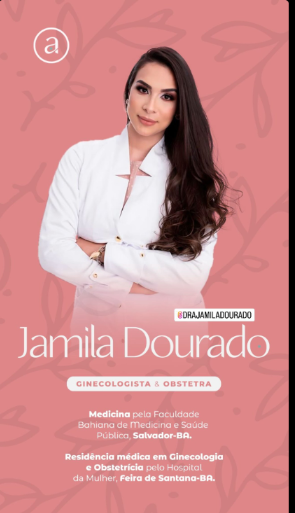
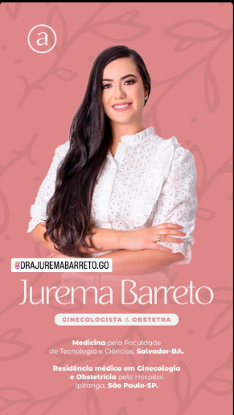
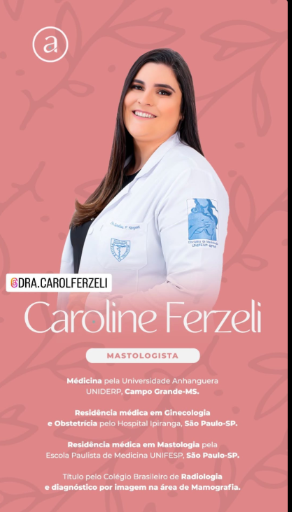
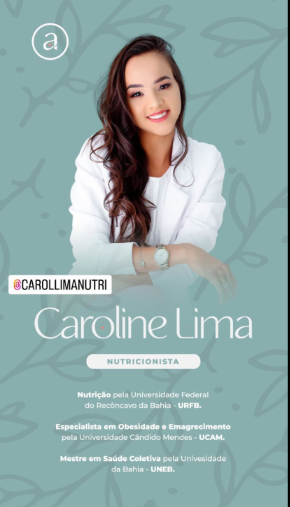
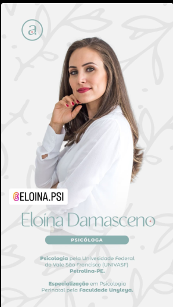
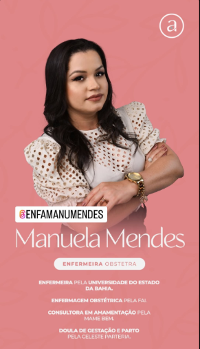

01
Ginecologia
Prevenção, acompanhamento e cuidado íntimo com naturalidade e escuta.
↗Saúde feminina, por inteiro
Na Amare, cada mulher encontra espaço para ser acolhida, respeitada e cuidada em todas as fases da vida.

Somos uma clínica dedicada à saúde da mulher. Um lugar onde a medicina encontra a escuta atenta e onde perguntas são sempre bem-vindas.
Do primeiro ciclo à maturidade, construímos uma relação de confiança para que você se sinta segura em cada decisão sobre o seu corpo.
Prevenção, acompanhamento e cuidado íntimo com naturalidade e escuta.
↗Uma jornada de gestação acompanhada com informação, vínculo e tranquilidade.
↗Olhar cuidadoso para a saúde das mamas, da prevenção ao tratamento.
↗Exames precisos em um ambiente acolhedor, com tecnologia e delicadeza.
↗
Ginecologista e Obstetra
Medicina pela Faculdade Bahiana de Medicina e Saúde Pública, Salvador-BA. Residência médica em Ginecologia e Obstetrícia pelo Hospital da Mulher, Feira de Santana-BA.
@drjamiladourado ↗
Ginecologista e Obstetra
Medicina pela Faculdade de Tecnologia e Ciências, Salvador-BA. Residência médica em Ginecologia e Obstetrícia pelo Hospital Ipiranga, São Paulo-SP.
@drajuremabarreto.go ↗
Mastologista
Residências em Ginecologia e Obstetrícia e Mastologia. Título pelo Colégio Brasileiro de Radiologia e diagnóstico por imagem na área de Mamografia.
@dra.carolferzeli ↗
Nutricionista
Especialista em Obesidade e Emagrecimento pela Universidade Cândido Mendes e mestre em Saúde Coletiva pela Universidade da Bahia.
@carollimanutri ↗
Psicóloga
Psicologia pela Universidade Federal do Vale do São Francisco, Petrolina-PE. Especialização em Psicologia Perinatal pela Faculdade Unyleya.
@eloina.psi ↗
Enfermeira Obstetra
Enfermagem pela Universidade do Estado da Bahia. Enfermagem Obstétrica pela FAI. Consultora em amamentação pela Mãe Bem e doula de gestação e parto.
@enfamanumendes ↗Você não é apenas um diagnóstico. Por isso, nosso cuidado começa antes da consulta e continua em cada detalhe.
Um espaço desenhado para que você se sinta à vontade para falar e ser ouvida.
Privacidade, conforto e tempo para que cada encontro seja verdadeiramente seu.
Equipamentos modernos e uma equipe atualizada para decisões mais seguras.
“Desde a primeira consulta, senti que estava em um lugar onde meu tempo e minhas dúvidas importavam. Saio sempre mais tranquila.”
Marina S. • paciente Amare
“A equipe me acompanhou com muito carinho durante toda a gestação. Informação e acolhimento fizeram toda a diferença.”
Juliana R. • paciente Amare
“É raro encontrar um atendimento tão humano e, ao mesmo tempo, tão cuidadoso em cada detalhe. Recomendo de olhos fechados.”
Camila A. • paciente Amare
Vamos conversar?
Agende sua consulta e venha conhecer um jeito mais leve de cuidar da sua saúde.
Falar com a AmareRua das Acácias, 218 · Vila Madalena
São Paulo · SP
Segunda a sexta, das 8h às 18h
Sábados, das 8h às 12h
(11) 99999-9999
oi@clinicaamare.com.br